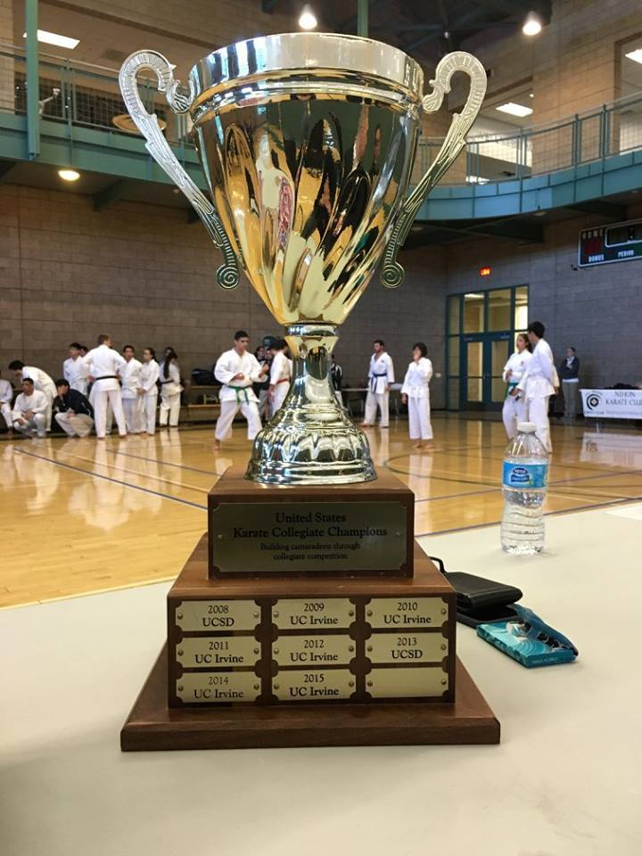

The Nihon Karate Club was founded in spring quarter of 2009. With the interest of officially being recognized by the ARC as a club sport, representing UC Irvine at competitions, and being able to host an annual home tournament, members of the ARC's Traditional Japanese Karate class congregated to form the Nihon Karate Club. It was aptly named after Nihon Karate Dojo, stationed in Buena Park, California. The dojo is run by Sensei Bruce Nguyen and Sensei Chad Eagan, the instructors of the affiliated ARC class.
Despite its recent establishment, NKC has made a number of accomplishments, including:
- 1st place at the Collegiate PATMA Tournament at UC San Diego on April 2009. Our members also participated in the open competition, winning a total of 6 medals.
- Long Beach International Tournament during August 2009, with individual members participating in the open tournament and winning a total of 5 gold medals.
- Hosting the first annual UC Irvine Collegiate Karate Championship on November 2009, the first karate tournament held at UCI for over 30 years, with support from PATMA and sponsorship from Sanbon Pro Apparel.
- Some
- More
- Stuff
- We've
- Done
- IDK
- What's
- Happened
- Since
- 2009
- I
- Just
- Got
- Here